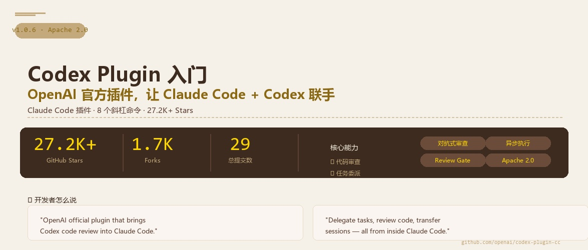

你琢磨琢磨，现在 AI 编程工具这么多，Claude Code、Codex、Cursor、Copilot……每个都有自己的长处。但问题是——你非得选一个用到死吗？能不能让 Claude 写代码、让 Codex 做审查？能不能让两个 AI 各干各的擅长的活？OpenAI 说：可以，我给你们写了个插件。
没错，OpenAI 官方在 GitHub 上开源了一个插件，名字叫 codex-plugin-cc，专门给 Claude Code 用的。装上之后，你可以在 Claude Code 里直接敲 /codex:review、/codex:rescue 这些命令，让 Codex 帮你干活。27.2K Stars，Apache 2.0 协议，OpenAI 官方出品，一个字：骚。
⭐这玩意儿解决了什么问题？
我跟你讲一个真实场景，你就懂了：
你正在用 Claude Code 写一个功能，写了半天，自我感觉不错。但你想让人 review 一下代码。"要不切到 Codex 看看？"——你关掉 Claude，打开终端，跑 Codex，等它审查完，再切回 Claude。来回切换，光上下文切换就够烦的。
这个插件的解决思路简单粗暴：别切了，在 Claude 里直接调 Codex。 一条命令，Codex 在后台跑审查，你继续用 Claude 写代码。审查结果出来了，切过去看一眼就行。
🔹不用切换工具
Claude Code 里直接敲命令，Codex 后台干活，互不干扰。
🔹异步执行
代码审查、bug 排查这些耗时的活，扔到后台跑，你继续用 Claude 干活。
🔹各取所长
Claude 擅长什么、Codex 擅长什么，你就让它们各自干自己擅长的。比如让 Codex 做安全审查，让 Claude 写核心逻辑。
01一句话说清楚 Codex Plugin 是什么
Codex Plugin = Claude Code 里装一个 Codex 快捷入口 = 两个 AI 帮你写代码，不用切来切去
技术上来说，它是一个 Claude Code 的插件，通过 /codex: 开头的斜杠命令，让你在 Claude Code 里直接调用你本地安装的 Codex CLI。它不启动新的运行时、不需要额外登录——用的就是你电脑上已有的 Codex 安装和认证。
🔹不是替代品
不是让你用 Codex 替代 Claude，而是两者配合。Claude 主攻，Codex 助攻。
🔹不是新工具
它就是个桥梁，本身不写代码，让 Claude 和 Codex 能互相调用。
🔹OpenAI 官方出品
Apache 2.0 开源，不是第三方野鸡插件，OpenAI 亲自维护的。
028 个斜杠命令，个个有用
安装完后，你会在 Claude Code 里多出一套 /codex: 命令。咱们一个个看：
🔍/codex:review — 代码审查
对你当前未提交的变更做一次代码审查。支持 --base main 指定对比分支，--background 后台跑。注意：标准 review 是只读的，不改代码。
⚡/codex:adversarial-review — 对抗式审查
这是 review 的进阶版。它不只看代码有没有问题，而是专门挑战你的设计决策——"你为什么选这个方案？有没有更好的做法？有没有竞态条件？"你还可以指定审查方向，比如 /codex:adversarial-review 帮我检查缓存设计的竞态条件。
🚑/codex:rescue — 任务委派
把任务丢给 Codex 去干。比如"帮我查一下为什么测试挂了"、"把这个 bug 修了"。支持 --model gpt-5.4-mini 指定模型、--effort medium 指定推理力度。甚至有个 --model spark 的快捷方式，映射到 GPT-5.3-Codex-Spark 模型。
🔄/codex:transfer — 会话移交
把当前 Claude Code 的对话上下文转到 Codex 里继续。它会生成一个 codex resume <session-id> 命令，你复制到终端跑一下，Codex 就能接着 Claude 的进度继续干。
📊/codex:status / /codex:result — 查看状态和结果
后台跑的任务，用 /codex:status 看进度，/codex:result 看最终结果。
⏹️/codex:cancel — 取消任务
后台跑的任务如果不想等了，直接取消。
03安装只要 4 步
前提条件：
# 需要的环境
Node.js 18.18+
ChatGPT 账号（免费版也行）或 OpenAI API Key
本地已安装 Codex CLI（如果没装，安装过程中可以自动装）
在 Claude Code 里依次执行：
# 1. 添加插件市场
/plugin marketplace add openai/codex-plugin-cc
# 2. 安装插件
/plugin install codex@openai-codex
# 3. 重载插件
/reload-plugins
# 4. 运行安装检查
/codex:setup
⚠️ 新手注意
如果 /codex:setup 提示 Codex 未安装，它会问你是否要自动安装，选是就行。如果认证有问题，手动跑一下 !codex login 登录。安装完成后，先跑一个 /codex:review --background 试试水，然后用 /codex:status 和 /codex:result 查看结果。
04典型工作流：这玩意儿怎么用才爽？
🛠️ 流程序列 1：写代码 + 自动审查
1. 用 Claude Code 写代码
2. 写完敲 /codex:review --background，让 Codex 在后台审查
3. 继续用 Claude 写下一个功能，不耽误
4. 过一会 /codex:result 看审查结果，有问题的让 Claude 修
🐛 流程序列 2：排查 bug 接力
1. Claude Code 写代码时遇到一个棘手的 bug
2. 敲 /codex:rescue investigate why the login test is flaky
3. Codex 在后台复现、分析、定位根因
4. 结果出来了，根据 Codex 的发现，让 Claude 修
🔐 流程序列 3：对抗式安全审查
1. 功能写完了，敲 /codex:adversarial-review 重点检查安全漏洞和数据泄露风险
2. Codex 从攻击者视角挑战你的代码
3. 发现漏洞，Claude 修，Codex 再查一遍，直到安全过关
看到没？这就不是"谁替代谁"的问题了——这是让两个 AI 打配合。Claude 擅长的是理解和执行复杂指令，Codex 擅长的是代码审查和快速排查。一个写、一个查，效率翻倍。
05配置和 Review Gate 机制
插件默认会继承你已有的 Codex 配置——在 ~/.codex/config.toml 或项目根目录的 .codex/config.toml 里。比如：
# .codex/config.toml
model = "gpt-5.4-mini"
model_reasoning_effort = "high"
插件还带了一个叫 Review Gate 的功能，比较有意思。它用 Claude Code 的 Stop 钩子机制——每次 Claude 要输出结果之前，先让 Codex 快速审查一下。如果发现了问题，就拦住 Claude，让它先改。
⚠️ Review Gate 的提醒
官方文档说了：这个功能可能会导致 Claude 和 Codex 来回循环，消耗你的 API 额度很快。新手建议先别开，等用熟了再说。开启方式：/codex:setup --enable-review-gate。
06模型怎么选？
/codex:rescue 命令支持 --model 和 --effort 参数，让你在不同场景选不同的模型和推理力度：
⚡spark（--model spark）
映射到 GPT-5.3-Codex-Spark，轻量快速。适合简单的代码审查、快速排查。跑得快，花得少。
🧠自定义模型（--model gpt-5.4-mini）
直接指定模型名，配合 --effort（low/medium/high）控制推理深度。复杂任务上高力度，简单任务上低力度省钱。
🤖默认（不传参数）
Codex 自己选模型和参数。对新手来说，啥都不传也是一个可行的选择。
💡 省钱的姿势
日常简单审查用 --model spark，又快又便宜。只有遇到复杂 bug 或者要做安全审查的时候，再上 full model + high effort。别什么活都让最贵的模型干，学会省钱也是生产力。
Q1：Codex Plugin 是做什么的？
👆 点击每个选项查看对错
Q2：以下哪个命令是对抗式代码审查？
👆 点击每个选项查看对错
📌 这节课你学到了什么
✅ Codex Plugin 是什么——OpenAI 官方出的 Claude Code 插件，让两个 AI 联手
✅ 8 个核心命令——review / adversarial-review / rescue / transfer / status / result / cancel / setup
✅ 安装流程——4 步搞定，从插件市场到 /codex:setup
✅ 三种典型工作流——代码审查接力、bug 排查接力、安全审查
✅ Review Gate——自动审查门禁，但小心额度
✅ 模型选择——spark 省钱的轻量模型 vs full model 高力度推理
📒
第 1 课 · 笔记完成
你已经搞懂了 Codex Plugin 是什么、怎么用、什么时候用。
下一步就是装上试试——先跑个 /codex:review --background 感受一下"两个 AI 帮你干活"是什么体验。
📖 参考：github.com/openai/codex-plugin-cc — README、Official Docs
📊 数据来源：GitHub 2026.07 — openai/codex-plugin-cc 以 27.2K+ Stars 成为 AI 开发工具热门项目